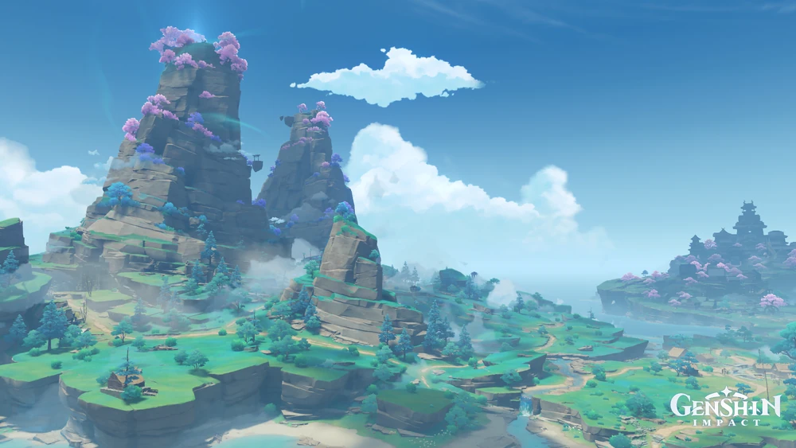
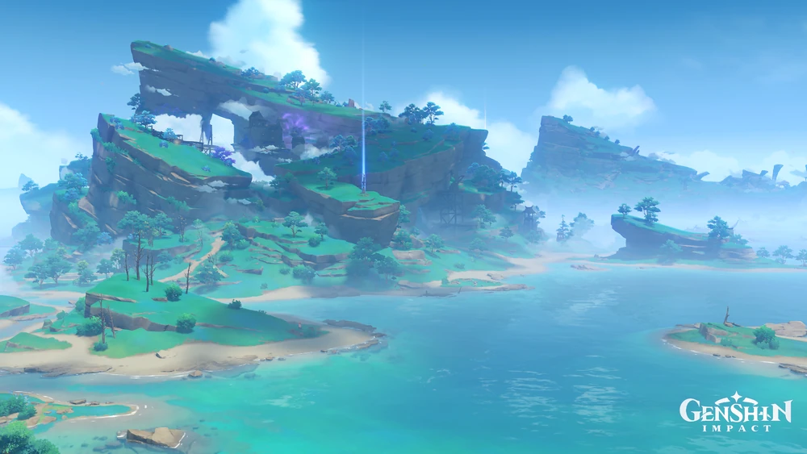
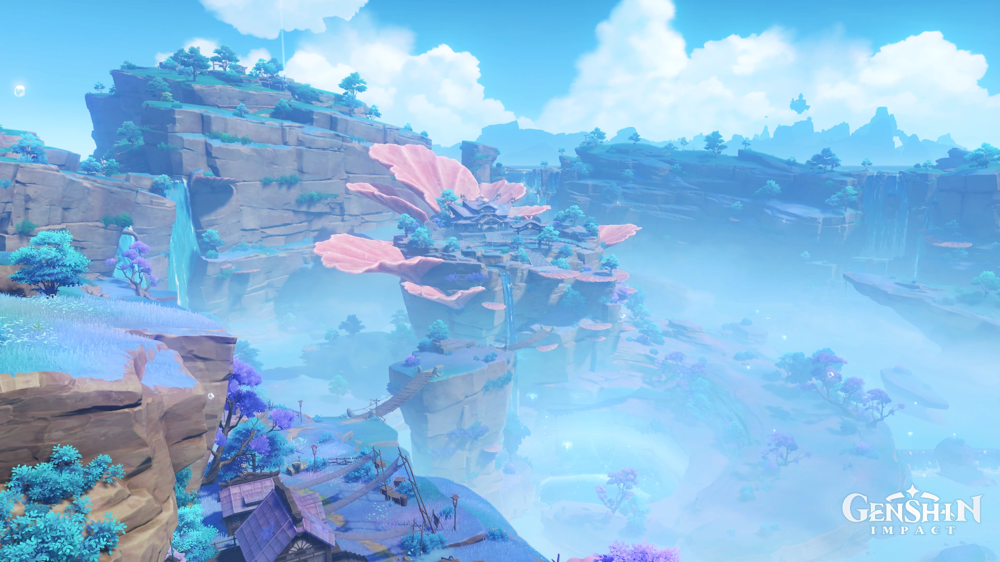
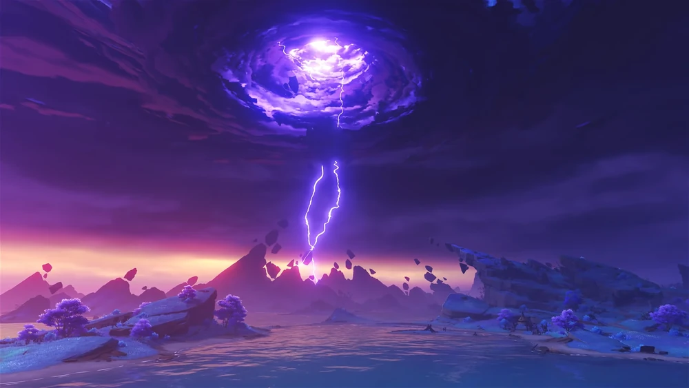
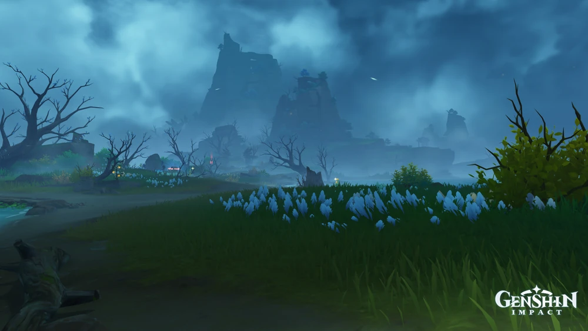

Introduction

Inazuma (Japanese: 稲妻 Inazuma) is one of the seven regions of Teyvat. It is an archipelagic region that worships Raiden Shogun, the Electro Archon and God of Eternity — who is also the leader of its governing body, the Inazuma Shogunate. Inazuma is located approximately 4 km southeast from Liyue Harbor and closely neighbors the Dark Sea.
Islands





